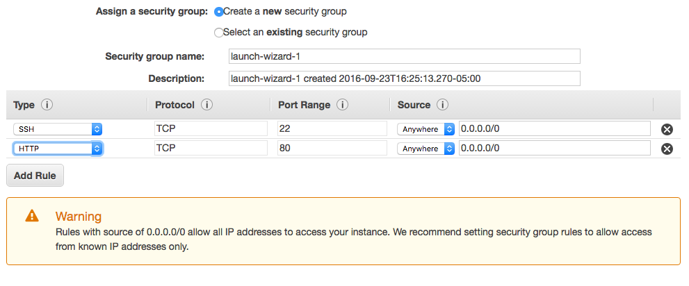
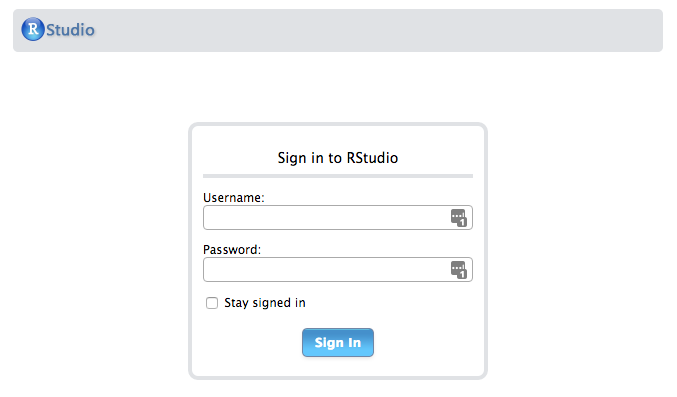
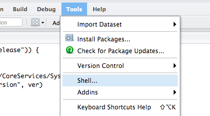
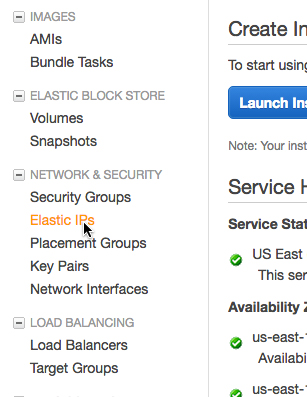
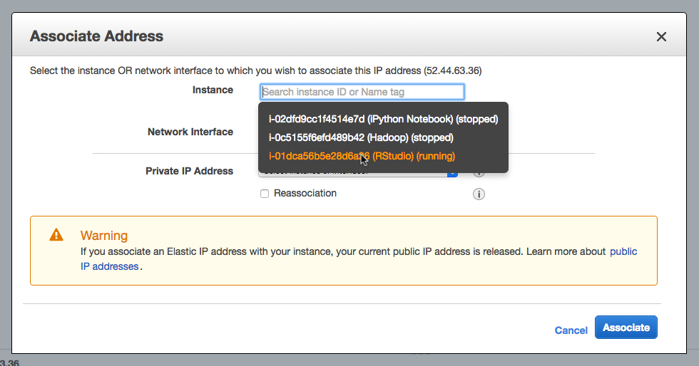

Motivations for the RStudio course server
This fall is probably the most enjoyable semester I’ve ever had teaching. I had an opportunity to design and run an upper-level special topics course on bioinformatics at Elmhurst College. It’s a class I’ve always wanted to teach because for me, it’s like being able to organize a class around everything I would have wanted to know before going to graduate school for genetics.
A few discussions with other faculty members and the chair of the department revealed a need for biostatistics as well as the typical sequence-based content for a bioinformatics course. Students are required to take a statistics course, and indeed all of my students in the class had already taken such a course. But the other biology professors were pretty adament that the students could use more stats knowledge especially as it is applied to biology since there is not a specific biostats course in the curriculum.
For the biostats portion, I wanted to introduce the students to R, since it can be used for general stats uses as well as hypothesis testing and plotting. The fact that there are also fully featured packages specifically for bioinformatics and sequence analysis in the Bioconductor suite meant that we could use R and RStudio throughout the semester for both the biostats and bioinformatics units. It seemed like a no-brainer. Except for the recommendation from others who have taught bioinformatics at the undergraduate level to avoid programming like the plague. Nonetheless, I was certain I could ease them into R if I could just make their journey as painless as possible. Like cattle to the slaughterhouse, with a little prodding and positive reinforcement, they can be convinced.
The options for teaching R
After looking over several bioinformatics and biostatistics syllabi, online courses, and tutorials, I narrowed down to four options for introducing and using R in the classroom.
- Having students install R/RStudio on their own laptops (or with the department’s laptops in the case of students without their own machine)
- Using a computer lab with R/RStudio preinstalled
- Setting up my own RStudio server in the cloud
- Using the College’s Citrix server application for R
Option 1. is outright horrifying. I certainly did not want to have to do my own IT support and troubleshooting while helping them install R on their own machines. I would not mind helping out the occasional student who was interested in having R on their laptop for future use, but I did not want it as a requirement for all students.
Option 2 would be rather nice, but our class had already been assigned to a regular classroom. But, I wanted the students to be able to access R when not in class.
I thought that the fourth option would be the least in overhead for both myself and the students. Our college has a Citrix server with academic applications, including R and RStudio. Our IT department was somewhat helpful in setting up the environment according to my particular needs - having packages preinstalled to avoid adding in the complexity of having each student install each and every package individually.
But after using the Citrix application myself during a test run, it was painfully slow for memory intensive functions. And there was also an issue with uploading files onto the citrix server as our IT person insisted on requiring the students to use ftp. Getting data into R is enough of a pain without that additional barrier.
I decided in the end for option 3, rolling my own server on AWS. There is a nice public AMI available for R/RStudio by Louis Aslett that makes it very easy to get the basic server up and running for a single user. Below is what I did to add my class as users and to set up packages under the system library.
How to set up an RStudio environment for a Bioinformatics (or other!) course
Initialize the RStudio AMI
You’ll first need to set up an account with AWS. Once you have an account with a credit card on file you are ready to start.
Select your region and version of RStudio on Mr. Aslett’s site, which will lead you into AWS with his AMI selected. I’m using the U.S. East region which is good for my location in Chicago.
Select t2.micro for the free account eligible option.
Click ‘Next’ until you get to the 6th option, to ‘Configure Security Group.’ Make sure you have both http and ssh as ways to access your server. If only one is present, click ‘Add Rule’ and fill in so it looks like this.

After clicking Review and Launch click Launch. You will be prompted to set up a public key file for authentication. Create a new key called AWS.pem which will be downloaded to your computer. This file acts like a physical password allowing you to connect to your server by ssh. But first, let’s just see if our server is up and running.
Obtain your public IP address, which is listed in the description section of the EC2 instances page. Go to your running instances, select it, and copy the Public IP on the lower Description. Put the IP address in your browser’s address bar and see your RStudio login page.

The default username and password are both ‘rstudio’ Log in and make sure it’s working ok. You will want to change the password to the rstudio account (see below on how to do that from within the RStudio environment), but for now you can log out and continue the set up.
Install packages to R system library
Next up, we will install some packages that are useful for bioinformatics. The key here is to have the packages installed for all users on the server, in order to avoid having each student responsible for installing packages on their own. You might decide on using different packages, but you can use my script as a template for listing the packages you need to install. On Mac and linux, find your Terminal application. The easiest way on a Mac is to open up Spotlight with Command-Space and type ‘terminal.’ Windows requires additional software, but Linux users can essentially follow this as well.
First, I recommend placing your AWS.pem file you downloaded to a hidden directory in your home folder. First we will change directories to your home folder (cd). Then create the .ssh hidden folder (mkdir). If you already have a folder called .ssh, you will get an error. Just continue with the next line. Move the AWS.pem file from your Downloads folder to the new directory. Then you will need to change the permissions (chmod) on the file to be read only to yourself and not readable or write-able for others.
cd
mkdir .ssh
mv Downloads/AWS.pem .ssh/
chmod 400 .ssh/AWS.pem
Create script with necessary packages
I created an R script with the packages that we would use throughout the semester. Some were basic R packages from CRAN, and others were from the Bioconductor project. My script is here if you would like to use it as a template. Save this file somewhere on your local machine, like in your Documents folder.
Copy the script to the server
Use the terminal window to secure copy (scp) your script to the server. You will also need the path to where you placed the edited packages.R script. If you don’t know the path to your script you can drag your file from the finder into the terminal window and it will fill in the path and file name for you. Replace 0.0.0.0 with your public IP address that you got from the Amazon EC2 page. Notice the colon at the end of the public IP address, as well.
scp -i .ssh/AWS.pem location/of/script/packages.R ubuntu@0.0.0.0:
Now that the script is copied to the server, we need to log in to the server and run it. This syntax will run as the root super user and install packages for all users. Notice there is no colon after the IP address this time.
ssh -i .ssh/HadoopAWS.pem ubuntu@0.0.0.0
sudo su - -c "R -e \"source('/home/ubuntu/packages.R')\""
For future reference, to install individual packages as necessary, this syntax will install for all users. Replace PACKAGENAME with your desired package.
sudo su - -c "R -e \"install.packages('PACKAGENAME')\""
Create accounts for each student in your class
Now you can add users with usernames and a common password. After you ssh into the server, for each student enter:
adduser StudentName
The adduser command will prompt you for information on each user. Here I left all fields blank for each user except the password, which was the same for all users. Later I would instruct them on how to change their password (see below).
Scale your instance according to your needs and budget
Thus far we have set up our instance as a t2.micro. This is the only option eligible for the free service for the first year. During the lab sessions, however, the t2.micro won’t be able to handle the memory-intensive analyses of microarrays or whole genome mapping, or be able to handle multiple users very well. The r3 instances are optimized for RAM use and are actually recommended for genomic applications. They are not free, but they are very affordable for course costs, especially when compared to wet-lab biology materials!
Before the class meets for lab, from the Actions pull down menu of your instance:
- Stop your t2.micro instance, from the Instance State menu
- Resize it to r3.large or r3.xlarge, by selecting ‘Change Instance Type’ from the Instance Settings menu option
- Restart your instance, from the Instance State menu
I reverse the process after lab is adjourned and switch back to the t2.micro. I do this to avoid unnecessary charges. The cost of the r3.large is $0.166 / hour, which would be ~$30 / week. That might be ok for your budget, but we like to cut costs at Elmhurst, and the t2.micro is adequate for students to occasionally log in and go over the exercises. They also have the Citrix server option as well.
Estimated costs
I estimate that by using the r3.large instance only during lab, we are paying less than $15 for the entire semester. During the weeks we are doing full scale genomic analysis, I will bump us up to the r3.xlarge.
First lab session
I told the students how to change their passwords, after they log in to RStudio. Go to Tools, Shell…

And enter the following command
passwd
Students can input their current password and change to one of their liking. Tell your students that when they type their password the cursor will not show astrisks or how many letters they’ve typed, but that it is, in fact, working.
Optional: Create permanent URL and domain name
Normally if you stop and restart your instance, you are assigned a new IP address. You can simply write the name of the new IP on the whiteboard or post it on-line whenever it changes. However, Amazon has an elastic IP that you can use. An elastic IP will act a permanent IP, which will be assigned to your instance while it is running. It’s free as long as an instance is running, and is $0.005 / hour when the instance is not running. Since we can always run our free t2.micro instance, an elastic IP is essentially free.
Find Elastic IPs in the side menu of the EC2 Console.

Allocate a new address. Then highlight the new addres, pull down on Actions and select Associate Address. Then find your instance you want to associate with the elastic IP.

Concluding remarks
That’s it! After using AWS for a few months you get used to the ugly interface and start to see all of the great customizations you can do to scale your server to meet your needs.